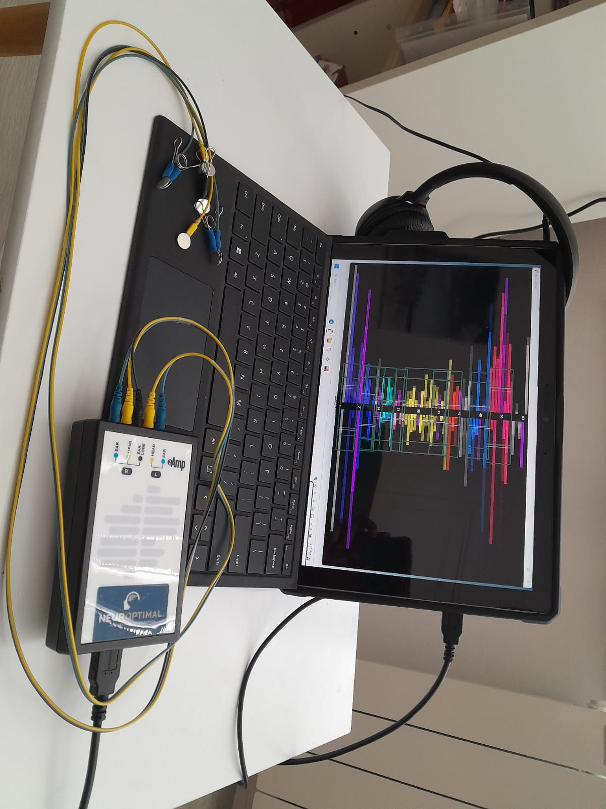

Espace Particuliers
Le Neurofeedback : une meilleure santé grâce à un cerveau mieux régulé
Le Neurofeedback dynamique NeurOptimal® : une solution thérapeutique efficace
La technique du Neurofeedback dynamique entraîne des améliorations remarquables sur un ensemble de problématiques.
Les résultats observés par les neuroscientifiques, par les utilisateurs et par leur entourage sont impressionnants et concernent des troubles, des pathologies et des problématiques multiples : trouble de l’attention, des apprentissages, de la graphie, troubles “dys”, du sommeil, stress, phobie, angoisse, traumatismes, tocs, démangeaisons, digestion, systèmes immunitaire et hormonal, douleurs, addictions (alcool, cigarettes, drogues, nourriture). Il agit également sur le manque de confiance en soi, l’hyperactivité, l’hypersensibilité, l’émotivité, le burn out, la dépression...
L’entraînement Neurofeedback apprend à votre cerveau à fonctionner plus efficacement et confortablement, tout en créant flexibilité et résilience. Les effets sont durables; et, naturellement, en optimisant les fonctions de votre cerveau, vous optimisez aussi votre fonctionnement au quotidien.
TROUBLES COGNITIFS
- Difficultés de mémorisation, de concentration, d’apprentissage, du langage
- Désorganisation de la pensée
- Troubles DYS (Dyslexie / Dyspraxie / Dysphasie / Dyscalculie / Dysorthographie…)
- Trouble du Déficit d’Attention avec ou sans Hyperactivité (TDAH)
TROUBLES DU COMPORTEMENT
- Colères, irritabilité, impulsivité
- Hyperactivité
- Agressivité, violence verbale et/ou physique
- Burn-out
- Addictions
- Trouble du sommeil, insomnies
- Troubles Obsessionnels Compulsifs (TOC)
- Troubles de la mémoire / Concentration
- Troubles envahissants du développement (TED)
- Troubles du Comportement Alimentaire (TCA)
TROUBLES DE L’HUMEUR
- Angoisse, anxiété, stress
- Phobies, évitements phobiques
- Dépression, Burn-out
- Manque de confiance en soi
- Crises de panique
- Traumatismes, chocs psychologiques
- État de Stress Post-Traumatique (ESPT)
TROUBLES PHYSIOLOGIQUES
- Épilepsie
- Spasmophilie
- Allergies & Asthme
- Migraines
- Problèmes de peau, eczéma et psoriasis
- Douleurs et fatigues chroniques
- Acouphènes, vertiges
- Syndrome des jambes sans repos
- Bouffées de chaleur
- Énurésie
TROUBLES CÉRÉBRAUX
- Accident Vasculaire Cérébral (AVC)
- Douleurs fantômes
- Parkinson
- Alzheimer
- Autisme – Syndrome d’Asperger
- Dystrophie
Le Neurofeedback est indiqué pour les problèmes de déséquilibre du système nerveux.
Après quelques séances, de nombreuses personnes constatent un soulagement de leurs symptômes, qu’ils soient d’ordre physiques, mentaux ou émotionnels.
De plus, certains bénéfices se font ressentir au fil des séances, tels que :
- Augmentation de la conscience de soi
- Meilleur équilibre physiologique au repos
- Meilleur sommeil
- Amélioration de la fonction immunitaire
- Réduction des symptômes reliés au stress
- Réduction des symptômes de troubles fonctionnels
Applications et bienfaits au cas par cas
- Gestion des troubles psychologiques : le Neurofeedback peut vous offrir une nouvelle approche dans le traitement de troubles psychologiques, tels que la dépression, les troubles anxieux, les troubles alimentaires etc. En entraînant votre cerveau, vous lui donnez la capacité de s’autoréguler ce qui diminue les symptômes. Cette méthode non invasive représente une alternative ou un complément précieux aux traitements médicamenteux, avec l’avantage d’être dépourvue d’effets secondaires indésirables.
- Amélioration de la concentration et de l’attention : c’est une solution efficace si vous luttez contre des problèmes de concentration ou d’attention, comme le TDAH. En vous entraînant à stabiliser et à optimiser vos ondes cérébrales, vous pouvez améliorer significativement votre capacité à vous concentrer et à rester attentif sur de plus longues périodes. Cette méthode vous aide à renforcer votre contrôle cognitif, ce qui se traduit par de meilleures performances dans vos activités quotidiennes et professionnelles.
- Réduction du stress et de l’anxiété : si vous êtes souvent confronté au stress ou à l’anxiété, le Neurofeedback peut vous apporter un soulagement significatif. Cette technique vous aide à avoir un esprit plus calme et à réguler vos réactions émotionnelles en favorisant des états cérébraux plus détendus. En développant la capacité à s’autoréguler, votre cerveau maintient un état de calme et de sérénité, réduisant ainsi les symptômes d’anxiété, la gestion des pensées envahissantes et améliorant votre bien-être général.
- Amélioration du sommeil : une clé pour résoudre vos problèmes de sommeil, y compris l’insomnie ou les réveils nocturnes. En vous entraînant à moduler vos ondes cérébrales, vous favorisez un état propice à un sommeil profond et réparateur. Il peut vous aider à réguler vos cycles de sommeil, vous permettant de vous endormir plus facilement et de bénéficier d’un sommeil de meilleure qualité.
- Amélioration des performances cognitives et sportives : le Neurofeedback offre également la possibilité d’améliorer vos performances cognitives, que ce soit pour les études, le travail ou les activités quotidiennes. En optimisant l’activité de vos ondes cérébrales, vous pouvez augmenter votre capacité de mémorisation, accélérer votre vitesse de traitement de l’information et renforcer votre créativité. Cette méthode vous aide à exploiter pleinement votre potentiel intellectuel et sportif, vous rendant plus efficace dans diverses situations.
- Gestion de la douleur chronique ou fibromyalgie : pour ceux qui souffrent de douleur chronique ou de fibromyalgie, le Neurofeedback peut offrir une voie de soulagement en apprenant à votre cerveau à réduire la perception de la douleur. Cette technique vous aide à modifier les schémas d’activité cérébrale associés à la douleur, contribuant ainsi à diminuer son intensité et à améliorer votre qualité de vie. En diminuant l’intensité de votre réponse à la douleur, vous pouvez retrouver un confort quotidien et une plus grande autonomie.
DEROULEMENT
Comment ça marche ?
NeurOptimal® est une technologie avancée issue des neurosciences qui offre, au cerveau, un entraînement qui lui permet d’optimiser son fonctionnement. NeurOptimal® communique directement avec votre système nerveux central sans lui donner de directive.
Les docteurs psychologues cliniciens Valdeane W. Brown et Susan Brown ont mis au point un algorithme puissant qui a donné naissance à cette méthode de neurofeedback unique et innovante, celle du Dynamical Neurofeedback™. Il consiste en un entraînement pour le cerveau ; ce n’est pas un traitement médical et il ne requiert aucun diagnostic.
Cette technique, apparue en 1997 aux États-Unis, est arrivée en France depuis 2004.
Grâce aux mesures d’ondes cérébrales avec l’EEG (électro-encéphalogramme) et à un retour d’informations rendu par un logiciel, le cerveau se réorganise afin d’améliorer ses performances en quelques séances seulement. Aucune information et aucun courant électrique ne sont envoyés vers votre cerveau. Ces capteurs permettent de mesurer votre activité neuronale et de détecter la présence de très grandes variations, qui indiquent que la régulation entre excitation et inhibition n’est pas optimisée. Au moment où ces variations sont détectées, le système provoque une très brève interruption du son. C’est ce simple mécanisme qui alerte votre cerveau sur son propre fonctionnement et l’aide à se réorganiser.
Ce n’est ni un ordre, ni une stimulation. Votre cerveau prend simplement en compte cette information, sans aucun effort de concentration ou de contrôle exigé de votre part. Vous n’avez pas non plus à revivre des événements passés douloureux. Au fil du temps, le cerveau prend conscience des instabilités et travaille dessus. Au lieu de simplement les subir, il développe une meilleure résilience et une flexibilité accrue.
Le Neurofeedback n’est pas invasif, il est indolore, il n’émet pas d’électricité et ne base ses effets sur aucun type de médicament.
Comment ça se passe ?
Une séance dure environ une heure : un échange préalable sur les changements constatés, la pose des électrodes, la session proprement dite (33 minutes) puis la fin de la séance.
Lors de la première séance, nous échangerons pour connaître vos attentes et vous présenter les principes de la méthode. Ensuite, confortablement installé.e, vous choisissez de regarder un film ou d’écouter de la musique.
2 capteurs seront disposés sur votre cuir chevelu et 3 autres sur vos oreilles, puis la session est lancée.
Vous n’aurez rien à faire pendant cette session de 33 minutes, si ce n’est vous laisser porter par la musique ou par le film, ou bien dessiner ou faire un jeu. Les très jeunes enfants peuvent donc bénéficier de cet entraînement cérébral, ainsi que les personnes incapables de maintenir leur attention ou de communiquer.
Le Neurofeedback Dynamique NeurOptimal™ s’appuie sur le principe de la plasticité cérébrale pour retrouver flexibilité et résilience. Pendant la session, un ordinateur relié à un encodeur mesure l’activité cérébrale électrique grâce aux capteurs, et génère des micros interruptions dans la diffusion de la musique ou du film. Le cerveau ainsi informé sur son état, va pouvoir s’auto-réguler.
Le cerveau est en évolution permanente et intrinsèquement orienté vers l’auto-régulation générale, ainsi, le neurofeedback dynamique, sollicite la neuroplasticité du cerveau pour aller vers un système en santé de plus en plus adapté. Le cerveau est la structure DYNAMIQUE la plus complexe de l’univers.
Un système en santé repose sur Flexibilité et Résilience Le système de santé comprend le corps physique, émotionnel et mental. Un système flexible est capable de réagir rapidement aux changements environnementaux et aux turbulences. Un système résilient est capable de s’adapter aux changements environnementaux en constante évolution et sans souci. Flexibilité et résilience se développent ainsi à différents niveaux. Le neurofeedback dynamique est considéré comme une méthode douce, non invasive et sans douleur permettant de rétablir un équilibre efficace au sein du système nerveux central.
Le neurofeedback dynamique Neuroptimal® fournit une notification au cerveau lui indiquant de s’autoréguler du mieux qu’il peut, selon ses besoins, ses capacités et ses limites. Ce « feedback » permet au cerveau de recouvrer plus facilement sa résilience et flexibilité intrinsèques. Neuroptimal® permet l’équilibre optimal personnalisé déterminé pour chaque cerveau.
Combien de séances sont nécessaires ?
On ne peut déterminer le nombre de séances à l’avance car chaque cerveau possède un niveau de plasticité particulier, et donc fonctionne différemment. Le plus souvent, les premiers changements sont constatés après 5 à 6 séances, parfois moins. On observe que les effets deviennent durables dans le temps après 10 à 12 séances.
En règle générale, les clients font entre 10 à 20 séances et sont satisfaits des changements.
Pour les problématiques plus complexes comme le TDAH, le stress post-traumatique, le déclin cognitif lié à l’âge, les douleurs chroniques ou les maladies dégénératives, il faut souvent compter 20 séances et plus, dépendant de l’histoire de chacun et de ses attentes.
Quelle est la fréquence des séances de Neuroptimal ?
Il est également recommandé de faire au départ quelques séances régulières et rapprochées pour ressentir les premiers changements (1 à 2 par semaine), puis chacun sentira à quelle fréquence il souhaite faire ses séances.
Quand arrêter l’entraînement avec Neuroptimal ?
C’est la personne qui décide : il peut arrêter quand il est satisfait des changements qui se sont opérés, ou bien simplement faire une pause et reprendre quand il le souhaite.
